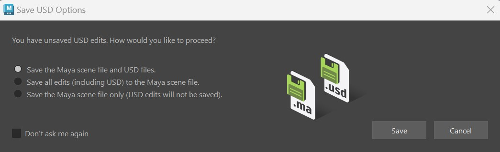
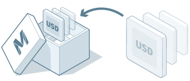
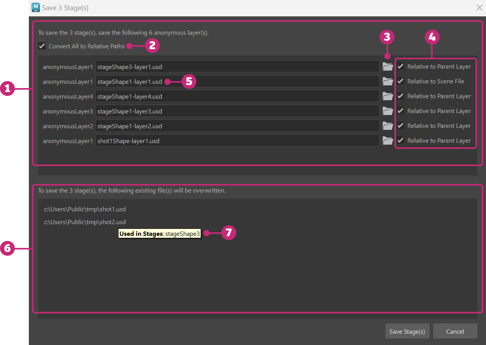

Save USD data in Maya
When you have unsaved USD edits on multiple layers in a stage or muliple stages, you can perform batch save operations. Anytime you have unsaved USD edits within your Maya scene file and you choose to save, there are 3 options for saving USD data.
To save USD data in Maya, select File > Save Scene or File > Save Scene As. A modal apears when you have unsaved USD layers with the following options:

Save USD Options
Save the Maya scene file and USD files (recommended): Select this option to save your Maya scene file (.ma, .mb) and your USD files (.usd, .usda, .usdc) to disk respectively.
Save all edits including USD, to the Maya scene file: Select this option to save your current Maya session with in-memory USD edits into a Maya scene file on disk (.ma, .mb). This option serializes your USD edits into your Maya scene file. When you open Maya again, your in-memory USD edits will persist as unsaved data. Important: per layer, any data exceeding the limit of 2GB will not be saved. This option is not recommended as data loss can occur.

Save the Maya scene file only (USD edits will not be saved): Select this option to ignore all USD edits and save only your Maya scene file (.ma, .mb).
 Don't ask me again in this Save USD Options dialog. You can also achieve that within File > Save Scene > > Universal Scene Description (USD) Options > by deselecting the checkbox for Ask me.
Don't ask me again in this Save USD Options dialog. You can also achieve that within File > Save Scene > > Universal Scene Description (USD) Options > by deselecting the checkbox for Ask me.Save multiple USD stages
If you have unsaved edits on multiple stages, and select the recommended option to save the Maya Scene file and your USD files, you will recieve the following dialog (or a portion of it - depending on if your layers are existing or new):

| Element | Description | |
|---|---|---|
| 1 | Anonymous Layer(s) Save | This section of the Save Stage Dialog appears when you have edits to anonymous or newly created layers. |
| 2 | Convert All to Relative Paths | (Recommended) Click to save all of your anonymous USD layers as relative paths. See save as relative. |
| 3 | Set Anonymous Layer Path | Click the folder icon to choose the location for saving your anonymous layer. |
| 4 | Relative to ... | Enable to activate relative pathing based on the specified label. Decendants will always be pathed relative to their parent layer. See save as relative. |
| 5 | Anonymous Layer File Name | Maya autopopulates a file name for the anonymous layer to be saved. You can change the name here. |
| 6 | Existing Layer(s) Save | This section of the Save Stage Dialog appears when you have unsaved edits to existing layers. This section exists as a confirmation of the layers being overwritten with edits. |
| 7 | Tooltip | Hover over any existing layer to identify the stage where it is sourced, or to see if it is shared between multiple stages. |
When you are ready to proceed with saving, choose Save Stage or select Cancel to stop the save operation for your USD data.
Further Saving
To perform more granular saves, use the USD Layer Editor to save within each of your individual stages. See Save Edits in the USD Layer Editor for more information.